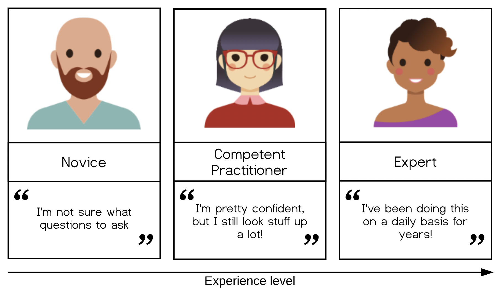
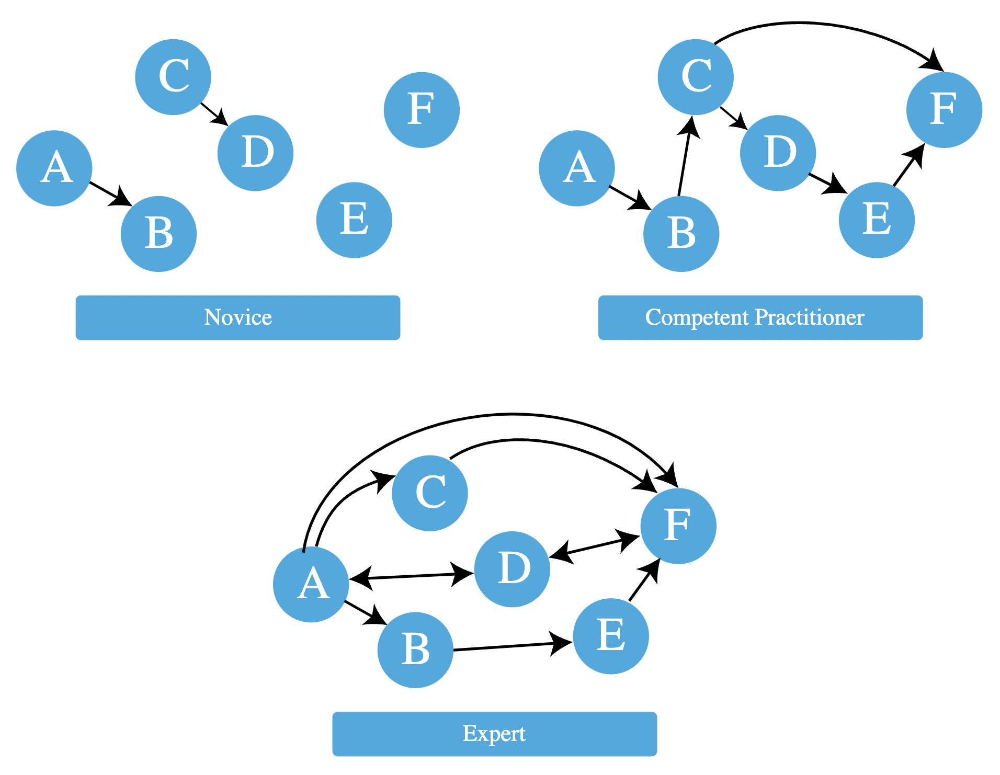

Instructor note
20 min teaching
25 min exercises
Acquisition of Skill
Questions
How do people learn?
Does subject expertise make someone a great teacher?
Objectives
Get an overview of cognitive development and how learners build mental models.
Compare and contrast three stages of skill acquisition.
Create a concept map to explore a simple mental model.
Know your learners
The first task in teaching is to figure out who your learners are. According to the Dreyfus model of skill acquisition learners acquire skills and advance through distinct stages through practice and formal instruction. In simplified form, the three stages of this model are:
Novices, competent practitioners and experts

Novice: someone who doesn’t know what they don’t know, i.e., they don’t yet know what the key ideas in the domain are or how they relate. One sign that someone is a novice is that their questions are “not even wrong”.
Competent practitioner: someone who has enough understanding for everyday purposes. They won’t know all the details of how something works and their understanding may not be entirely accurate, but it is sufficient for completing normal tasks with normal effort under normal circumstances.
Expert: someone who can easily handle situations that are out of the ordinary.
Participants in ENCCS workshops are usually competent practitioners. They already write code and know what additional tools or techniques they need to learn to accomplish their goals.
As will be further discussed in the episode on Lesson design, it is important to clearly define the target audience of workshops, including their background knowledge and training needs.
Cognitive development and mental models
Effective learning is facilitated by the creation of a well-founded mental model. A mental model may be represented as a collection of concepts and facts, connected by relationships. The mental model of an expert in any given subject will be far larger and more complex than that of a novice, including both more concepts and more detailed and numerous relationships. However, both may be perfectly useful in certain contexts.
Example mental model
A long-time European resident may have an advanced understanding of the location of European countries, major cities and landmarks, weather patterns, regional economies and demographic patterns, as well as the relationships among these, compared with their understanding of these relationships for other countries. In other words, their mental model of Europe is more complex compared with their mental model of other countries.

We can distinguish between a novice and a competent practitioner for a given domain based on the complexity of their mental models.
A novice has a minimal mental model of surface features of the domain. Inaccuracies based on limited prior knowledge may interfere with adding new information. Predictions are likely to borrow heavily from mental models of other domains which seem superficially similar.
A competent practitioner has a mental model that is useful for everyday purposes. Most new information they are likely to encounter will fit well with their existing model. Even though many potential elements of their mental model may still be missing or wrong, predictions about their area of work are usually accurate.
An expert has a densely populated and connected mental model that is especially good for problem solving. They quickly connect concepts that others may not see as being related. They may have difficulty explaining how they are thinking in ways that do not rely on other features unique to their own mental model.
Concept maps
Most people do not naturally visualize a mental model as a diagram of concepts and relationships. Mental models are complicated! Yet, visual representation of concepts and relationships can be a useful way to explore and understand hidden features of a mental model.
A useful tool for exploring any network of concepts and relationships is a concept map. A concept map asks you to identify which concepts are most relevant to a topic at hand and to identify how they are connected.
Adapted from Teaching Tech Together, licensed under CC-BY-NC-4.0
Mapping a mental model (20 min)
On a piece of paper, draw a simplified concept map of a topic that you are already teaching or that you want to teach in the future.
What are 3-4 core concepts involved?
How are those concepts related?
If you would like to try out an online tool for this exercise, visit https://excalidraw.com
Integrating new knowledge
According to the constructivism theory in education, learners do not acquire knowledge and understanding by passively perceiving it but rather by constructing new understanding and knowledge through experience and social discourse, integrating new information with what they already know.
We can understand this as adding new nodes and their connections to existing nodes to their mental models. We should thus try to connect new concepts with existing knowledge that we can assume the learners to have.
Meaning
Memory retention is also improved when learners are required to attach meaning to new information and reflect on why it is important. Instructors can assign tasks which require explanation (e.g. why something happened) to promote learners to meaningfully organise new information.
The power of analogies
Good analogies can be extraordinarily useful when teaching, because they draw upon an existing mental model to fill in another, speeding learning and making a memorable connection. However, all analogies have limitations! If you choose to use an analogy, be sure its usefulness outweighs its potential to generate misconceptions that may interfere with learning.
How “knowledge” gets in the way
Mental models are hardly ever built from scratch. Every learner comes to a topic with some amount of information, ideas and opinions about the topic. This is true even in the case where a learner can’t articulate their prior knowledge and beliefs.
In many cases, this prior knowledge is incomplete or inaccurate. Inaccurate beliefs (“misconceptions”) can impede learning by making it more difficult for learners to incorporate new, correct information into their mental models. Correcting learners’ misconceptions is at least as important as presenting them with correct information. Broadly speaking, misconceptions fall into three categories:
Simple factual errors. These are the easiest to correct.
Broken models. We can address these by having learners reason through examples to see contradictions.
Fundamental beliefs. These beliefs are deeply connected to the learner’s social identity and are the hardest to change.
Describe a misconception (5 min)
Describe a misconception you have encountered as a teacher or as a learner.
Expertise and teaching
Expertise is more than just knowing more facts - an expert’s mental models are also much more densely connected as we saw above. Having a greater connectivity of a mental model allows experts to:
See connections between two topics or ideas that no one else can see.
See a single problem in several different ways.
Know intuitively how to solve a problem, or “what questions to ask”.
Jump directly from a problem to its solution because there is a direct link between the two in
their mind. Where a competent practitioner would have to reason “A therefore B therefore C therefore … therefore F”, the expert can go from A to F in a single step (“A therefore F”).
However, experts are often so familiar with their subject that they can no longer imagine what it’s like to not see the world that way. They can thus be less able to teach the subject than people with less expertise who still remember learning it themselves. This phenomenon is known as the “expert blind spot” or the “expert awareness gap”.
The good news is that this impediment can be overcome by training! Experts can be highly effective as long as they learn to identify and correct for their own expert awareness gaps.
Keypoints
People at different skill level have different connectivities of their mental models.
Teachers can help learners integrate new knowledge by connecting it to previous knowledge, by attaching meaning to the new information, and by powerful analogies.
Experts can face challenges when teaching novices due to expert awareness gaps.